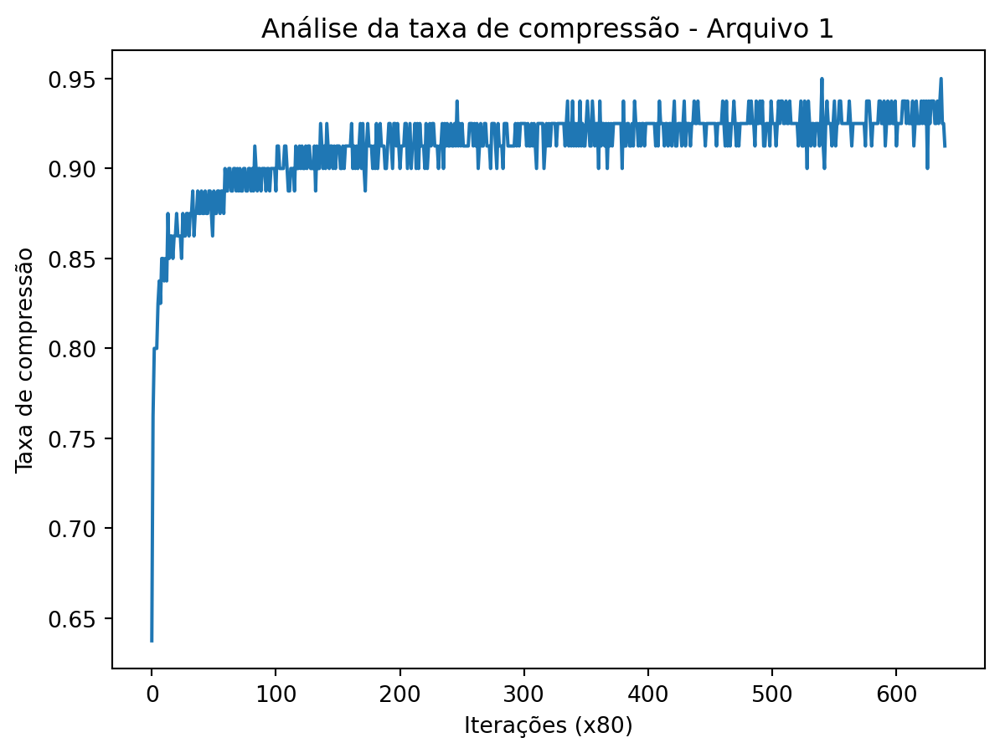

O objetivo deste trabalho é implementar o algoritmo LZW (Lempel-Ziv-Welch) de compressão de arquivos. O método se baseia na substituição de strings que se repetem no texto por códigos, e para isso, faz muitas consultas a um dicionário. Para a implementação desse dicionário, uma árvore de prefixos foi utilizada, em especial uma trie compacta que se baseia nos códigos binários das chaves a serem armazenadas.
Este relatório aborda primeiro a implementação do algoritmo em si, dando uma explicação do código e de como ele se deu. Em seguida, há uma seção de análise, onde testes com diferentes entradas são feitos a fim de observar como o programa se comporta nesses diferentes casos, utilizando métricas geradas durante a execução para quantificar as diferenças.
Nota
Para executar o programa, é preciso instalar as dependências com o comando abaixo:
pip install -r requirements.txt
O comando abaixo mostrará as flags necessárias para executar o programa:
python main.py -h # Windows
python3 main.py -h # Linux
Implementação
Haviam duas opções de linguagem de programação para o trabalho: C/C++ e Python. O Python foi escolhido devido à sua facilidade de escrita e de compreensão: enquanto o C++ permite um maior controle sobre a alocação de memória e outros detalhes de mais baixo nível, o Python tem funcionalidades como um coletor de lixo que permitem um foco maior na lógica do programa em si, e os detalhes são gerenciados pela própria linguagem.
O código do programa pode ser dividido em duas partes principais, que são abordadas mais à frente com mais detalhes:
Encoder/Decoder
Essa é a parte responsável pela implementação do algoritmo LZW em si, assim como pelo gerenciamento, leitura e escrita dos arquivos utilizados, traduzindo-os do binário para as strings e vice-versa. Existem duas versões deste código - a versão com códigos de tamanho fixo e a versão com códigos de tamanho variável, que serão tratados separadamente.
Dicionário
Essa é a parte onde o conteúdo visto em sala é utilizado, implementando uma trie compacta para armazenar as strings e os códigos utilizados no algoritmo LZW.
Encoder/Decoder
1. Encoder com código de tamanho fixo
Esta implementação usa códigos com tamanho predinido por parâmetro (default = 12). Quando o limite de códigos possíveis com n bits é atingido (2^n), não são mais criados códigos e apenas aqueles previamente inseridos são utilizados.
encode
Realiza a codificação dos bits de input em codigos com tamanho de string fixo. Cria uma trie com chaves que representam sequencias de bits e valores que representam os códigos (sequenciais).
Funcionamento:
Dado que um dicionario com os dois simbolos do alfabeto(0 e 1) já foi construido. Em seguida, o algoritmo consome símbolos do arquivo de entrada um-a-um. Ao ler um novo símbolo x, o algoritmo concatena x a uma string I, lida anteriormente, e verifica se a string Ix já foi armazenada no dicionário. Caso ela já tenha sido armazenada, o algoritmo atualiza a string I com a nova string Ix, e repete o processo. Caso a string Ix não tenha sido armazenada ainda, o algoritmo adiciona o código referente a I na string de codificação.Caso ainda houverem codigos disponíveis, insere a string Ix associada a um novo código (sequencial) no dicionário, atualiza I com x. Repete o processo até que não haja mais símbolos de entrada.
Código
def encode(self): encoding ="" I ="" max_code =pow(2,self.__codes_bit_size) count_compressions =0 start_time = time.time()for idx,i inenumerate(self.__input):if(self.__stats !=Noneand idx >0and idx %80==0):self.__stats["compression_rates"].append(count_compressions/80) count_compressions =0ifself.__trie.search(I+i) !=None: I = I + i count_compressions +=1else:ifself.__codes_count < max_code: # ainda nao estourei o numero de codigosself.__trie.insert(I+i,self.__codes_count)self.__codes_count +=1 code =self.__trie.search(I) code_in_binary =bin(code) code_in_binary = code_in_binary[2:] code_in_binary = code_in_binary.zfill(self.__codes_bit_size) encoding+=code_in_binary I = iif I !="": code_in_binary =bin(self.__trie.search(I))[2:].zfill(self.__codes_bit_size) encoding+=code_in_binary end_time = time.time()self.__stats["time"] = end_time - start_timeself.__stats["dict_size"] =self.__codes_countself.__stats["encoded_size"] =len(encoding)return encoding, self.__stats
decode
Realiza a decodificação. Cria uma árvore trie que busca copiar a árvore da codificação, porém nesse caso a árvore mapeia de código para sequencia original de bits.
Funcionamento:
Considerando que o dicionário com os dois símbolos já foi construído. O algoritmo então consome códigos da string de entrada (codificação) em blocos do tamanho definido para os códigos. Ao ler um código, o algoritmo verifica se esse já foi inserido no dicionário. Caso tenha sido, o primeiro símbolo dessa string é concatenado a string anterior, o resultado é adicionado ao dicionário caso já não esteja (foi utilizado um dicionário auxiliar para verificar isso), e impresso na saída. Finalmente, a string anterior é atualizada com a string recuperado pelo código e o processo se repete. Caso o código não esteja no dicionário, a string é concatenada ao seu primeiro símbolo, o resultado é adicionado ao dicionário e concatenado na saída.
Código
def decode(self): decoding ="" previous_str ="" idx =0 it =0 decompressing_acumulator =0 start_time = time.time() insertions =2while idx <len(self.__encoding):# used to calculate the decompressing rate if(self.__stats !=Noneand it >0and it %50==0):self.__stats["decompression_rates"].append(decompressing_acumulator/50) decompressing_acumulator =0 actual_code =self.__encoding[idx : idx+self.__code_size]if idx ==0: # trata especialmente o primeiro codigo previous_str =self.__table.search(actual_code) idx +=self.__code_sizecontinue insertions +=2# busca o codigo no dicionario actual_str =self.__table.search(actual_code) if (actual_str !=None):# codigo na tabelaifself.__inserted_strs.search(previous_str + actual_str[0]) ==None: code_in_binary =bin(self.__code_count)[2:].zfill(self.__code_size)self.__table.insert(code_in_binary, previous_str + actual_str[0])# dicionario auxiliar que possui como chave as sequencias inseridasself.__inserted_strs.insert(previous_str + actual_str[0],0)self.__code_count +=1 decoding += previous_str decompressing_acumulator +=len(previous_str) previous_str = actual_strelse: code_in_binary =bin(self.__code_count)[2:].zfill(self.__code_size)self.__table.insert(code_in_binary,previous_str + previous_str[0])self.__inserted_strs.insert(previous_str + previous_str[0],0)self.__code_count +=1 decoding += previous_str decompressing_acumulator +=len(previous_str) previous_str = previous_str + previous_str[0] idx +=self.__code_size it +=1 end_time = time.time()self.__stats["time"] = end_time - start_timeself.__stats["dict_size"] = insertions decoding += previous_str return decoding, self.__stats
2. Encoder com código de tamanho variável
Esta implementação usa códigos com tamanho inicial definido por parâmetro (default = 12) e crescente conforme a necessidade por novos códigos. Quando o limite de códigos máximo com n bits é atingido (2^n), não são mais criados códigos e apenas aqueles previamente inseridos são utilizados.
encode
Realiza a codificação de forma semelhar à implementação fixa. No entanto, separa os códigos formados por apenas 1’s para serem flags indicadoras da mudança de tamanho dos códigos.
Código
def encode(self): encoding ="" I ="" count_compressions =0 start_time = time.time()for idx, i inenumerate(self.__input):if(self.__stats !=Noneand idx >0and idx %80==0):self.__stats["compression_rates"].append(count_compressions/80) count_compressions =0 max_code =pow(2,self.__codes_bit_size)ifself.__trie.search(I+i) !=None: I = I + i count_compressions +=1else: estourou =Falseifself.__codes_count == max_code-1: # estourei o numero de codigos estourou =True Icode_in_binary =bin(self.__trie.search(I))[2:].zfill(self.__codes_bit_size) encoding+=Icode_in_binary ones =bin(pow(2,self.__codes_bit_size) -1)[2:] encoding += onesself.__codes_bit_size +=1self.__codes_count +=1self.__trie.insert(I+i,self.__codes_count)self.__codes_count +=1ifnot estourou: # caso nao tenha estourado nessa iteracao code =self.__trie.search(I) code_in_binary =bin(code) code_in_binary = code_in_binary[2:] code_in_binary = code_in_binary.zfill(self.__codes_bit_size) encoding+=code_in_binary I = iif I !="": code_in_binary =bin(self.__trie.search(I))[2:].zfill(self.__codes_bit_size) encoding+=code_in_binary end_time = time.time()self.__stats["time"] = end_time - start_timeself.__stats["dict_size"] =self.__codes_countself.__stats["encoded_size"] =len(encoding)return encoding, self.__stats
decode
Implementação semelhante à implementação fixa. No entanto, precisa tratar o caso de que o código passado é uma flag para a mudança de tamanho dos códigos.
Para a implementação do dicionário, utilizamos uma árvore de prefixos, em especial uma árvore trie compacta. Nesta árvore, as chaves de busca e inserção são os valores binários dos códigos ou do conteúdo dos arquivos, transformados em strings de 0s e 1s. Isso aumenta o custo em memória do algoritmo, que utiliza um caractere para cada bit da chave, mas facilita a implementação dos algoritmos que precisam manipular e comparar essas strings para verificar quando os prefixos casam.
A trie implementada aqui trata a raiz como um nó cabeça, onde o prefixo armazenado é a string vazia. Contanto que os devidos cuidados sejam tomados ao manipular este nó, isso facilita a implementação dos métodos, visto que todos eles podem iniciar a partir dela seguramente, sabendo que a string vazia é um prefixo de todas as strings.
A seguir, temos uma explicação dos métodos implementados na classe do Dicionário, incluindo os métodos auxiliares.
_prefix_match
Um método auxiliar _prefix_match foi implementado para fazer as comparações entre diferentes strings: ele verifica qual é o maior prefixo em comum entre as duas strings passadas. Isso é útil na inserção, por exemplo, onde o método é utilizado para descobrir a partir de que ponto a chave a ser inserida diverge da chave já armazenada, e que porção destas deve ser passada para um nó filho.
Código
def _prefix_match(self, s1: str, s2: str) ->int:"""Returns the length of the largest common prefix of s1 and s2""" i =0for c1, c2 inzip(s1, s2):if c1 != c2:break i +=1return i
search
Este é o método que performa a busca na trie compacta. A partir da raiz, ele escolhe um dos filhos para buscar baseado no primeiro dígito da parte ainda não casada da chave que está sendo buscada. Ele então verifica se a chave casa todo o prefixo armazenado naquele nó, acumula o prefixo casado, e em seguida, repete o processo a partir deste nó filho, e assim sucessivamente até que a chave seja encontrada, a profundidade da trie seja exaurida, ou alguma divergência ocorra. Nesses últimos dois casos, a chave não está na trie.
Código
def search(self, bit_str: str):"""Searches a bit string in the dictionary and returns the value on success, or None if not found.""" node =self.root i =0 length =len(bit_str)while i < length: bit =int(bit_str[i])# Search reached a leaf without fully matching bit_strif node.children[bit] isNone:returnNone# Child diverges from bit_str -> there can't be a leaf that matches bit_str fully child = node.children[bit]ifnot bit_str.startswith(child.prefix, i):returnNone node = child i +=len(child.prefix)return node.value
insert
Este método é responsável por inserir na trie novos nós com uma chave e um valor, e atualizar o valor já presente caso a chave sendo inserida seja uma chave já inserida anteriormente.
A ideia é percorrer a trie, de forma similar ao método de busca, buscando o nó onde a chave deveria estar, se estivesse presente. Se ela estiver de fato presente na trie, atualiza o valor já armazenado. Se houver divergência em algum nó e o prefixo armazenado nele não casar completamente com a chave sendo inserida, um novo filho é criado neste nó com a parte da nova chave que não foi casada, remanejando a trie para que ela se mantenha em um estado válido.
Código
def insert(self, bit_str: str, value: any):""" Inserts a new value, with bit_str as the key, and updates the value if it already exists. Returns False if the key was updated, or True if it was inserted fresh. """ node =self.root i =0 length =len(bit_str)while i < length: bit =int(bit_str[i])if node.children[bit] isNone:# Creates a new node with the rest of bit_str as the key new_node = Node(bit_str[i:], value) node.children[bit] = new_nodereturnTrue child = node.children[bit] common_prefix_length =self._prefix_match(child.prefix, bit_str[i:])if common_prefix_length ==len(child.prefix):# The whole prefix matched -> move to the apropriate child node = child i += common_prefix_lengthelse:# The strings diverge at this node -> separate into 2 subtrees new_prefix = child.prefix[:common_prefix_length] existing_suffix = child.prefix[common_prefix_length:] new_suffix = bit_str[i + common_prefix_length:]# Create new intermediary node for common prefix new_node = Node(new_prefix)# Transform old node and add it as child to the new node child.prefix = existing_suffix existing_suffix_bit =int(existing_suffix[0]) new_node.children[existing_suffix_bit] = child# Adds a leaf to the new node if there is a suffix left in bit_striflen(new_suffix) >0: leaf_node = Node(new_suffix, value) leaf_node_bit =int(new_suffix[0]) new_node.children[leaf_node_bit] = leaf_nodeelse: new_node.value = value# Adds new intermediary node to the tree node.children[bit] = new_nodereturnTrue# The key already existed in the trie -> update its value node.value = valuereturnFalse
remove
Este é o método responsável pela remoção de elementos da trie, a partir de uma chave dada, retornando para o programa se a remoção teve sucesso ou não. Ele utiliza um método interno auxiliar _remove que, recursivamente, percorre a árvore, aumentando o nível de profundidade até encontrar o nó que precisa ser apagado, caso exista. Em seguida, ele propaga para cima se o nó deve ser apagado ou não, de forma que, caso um nó possa ser compactado ou fique vazio, seu nó pai é avisado e o processo de compactação é feito. Esse efeito de propagação continua até atingir um nó que não precise ser apagado, indicando que, dali para cima, a trie não precisa ser modificada.
A recursão é necessária aqui porque os nós da árvore de prefixos não têm um ponteiro para o pai, então esse mecanismo é utilizado para que seja possível viajar na árvore no sentido inverso. Esse método recursivo é o que garante que a trie compacta permaneça compacta ao remover um elemento, e sem isso a árvore poderia ser deixada num estado inválido.
Código
def remove(self, bit_str: str) ->bool:""" Removes key from dictionary, returning True on success and False on failure (ex. if the key isn't in the dictionary) """def _remove(node: Node, bit_str: str, depth: int) ->tuple[bool, bool]:""" Recursive method for removing key. Returns a tuple (bool, bool) indicating if the removal was successful and if the child can be removed, respectively. """# Node doesn't existif node isNone:return (False, False)# When the corresponding node is foundif depth ==len(bit_str):if node.value isnotNone: node.value =None# Delete valuereturn (True, node.is_leaf()) # Node is leaf -> can be deletedreturn (True, False) bit =int(bit_str[depth])if node.children[bit] isNone:return (False, False) # String is not in trie child = node.children[bit] common_prefix_length =self._prefix_match(child.prefix, bit_str[depth:])# bit_str diverges from the prefix, so it can't be on the trieif common_prefix_length <len(child.prefix):return (False, False) success, can_remove_child = _remove(child, bit_str, depth + common_prefix_length)if can_remove_child: node.children[bit] =None# If node now became an empty leaf, it can be removed tooif node.is_leaf() and node.value isNone:return (success, True)# Node is not root, is empty and stil has another child that can be compacted into itif node.prefix !=''and node.value isNoneand node.children.count(None) ==1: remaining_child = node.children[1- bit] node.prefix += remaining_child.prefix node.value = remaining_child.value node.children = remaining_child.childrenreturn (success, False)# Child couldn't be removed. Assuming tree was valid before, it should remain valid.return (success, False)# Starts recursive removal from root success, _ = _remove(self.root, bit_str, 0)return success
reroot
Essa função não implementa uma funcionalidade padrão de um dicionário, mas sim uma funcionalidade útil para o algoritmo LZW. O objetivo desta função é acrescentar um prefixo 0 a todas as chaves já armazenadas na árvore. Isto é útil ao implementar o LZW com tamanho de código variável, pois, quando os códigos precisam aumentar de tamanho, essa função aumenta o tamanho de todos os códigos antigos para que sejam compatíveis com os novos códigos.
Para atingir esse objetivo, a função cria uma nova raiz, transforma a antiga raiz para que ela possua um prefixo de 0, e define esse nó transformado como filho da nova raiz, de forma que toda a trie anterior se torna uma subárvore com prefixo 0. Um cuidado é tomado caso a raiz tenha apenas um filho, para que a propriedade de compactação da trie seja mantida.
Código
def reroot(self) ->bool:""" Creates a new root for the underlying trie. If the trie is not empty, places the old root as child to the new root, with prefix 0 and no value. Returns true if rerooting took place, and false if it didn't. """ num_children =2-self.root.children.count(None)# No values to be rerootedif num_children ==0:returnFalse# Root has a single child, that would be fused into the new 0 node, so we# can just modify the current only childifself.root.children.count(None) ==1: bit =1-self.root.children.index(None) child =self.root.children[bit] child.prefix ='0'+ child.prefixself.root.children = [child, None]returnTrue# Root has two children, transform it into the new 0 node and attach to new root old_root =self.root new_root = Node('', None) old_root.prefix ='0' new_root.children[0] = old_rootself.root = new_rootreturnTrue
Análise
Para poder analisar o bom funcionamento do programa, foram feitos diversos testes, executando o programa com parâmetros diferentes e formatos de arquivo diferentes. Dessas execuções extraímos diversas métricas, como a taxa de compressão (e de descompressão) do arquivo ao longo da execução do programa, o tempo total de execução e a quantidade de inserções na trie. Utilizaremos essas métricas para caracterizar o programa.
Um cuidado especial tomado foi o de testar o programa com formatos de arquivo descomprimidos, como imagens em formato Bitmap (.bmp) e arquivos de texto puros (.txt). Isso é necessário porque existe um limite para quanto uma informação pode ser comprimida, relacionado à entropia da informação definida por Shannon. Por esse motivo, arquivos já comprimidos anteriormente, como imagens .png e documentos .pdf tendem a não reduzir significativamente em tamanho com passagens adicionais por um algoritmo de compressão, o que faz com que esses formatos não sejam ideais para testar o funcionamento do programa.
Nos arquivos de texto, foram feitos com três tamanhos diferentes de arquivo:
um arquivo pequeno (6,25KB)
um arquivo médio (22,6KB)
e um arquivo grande (418KB).
A primeira métrica a analisar é a taxa de compressão: para encontrar esse valor, marcamos toda vez que um bit é omitido da saída por já estar representado em um código. Esse valor é amostrado a cada 80 iterações do algoritmo. Abaixo temos as taxas de compressão para os três arquivos, com largura fixa:
Código
files = ["validation_data/theraven_stats_encoding_fixed.json","validation_data/frankesteinCh1-2_stats_encoding_fixed.json","validation_data/frankesteinfull_stats_encoding_fixed.json",]for i, fileinenumerate(files):withopen(sanitize(file),"r") as f: stats_encoding = json.load(f) plot_list(y = stats_encoding["compression_rates"], y_label ="Taxa de compressão", x_label ="Iterações (x80)", title=f"Análise da taxa de compressão - Arquivo {i +1}")
E também com largura variável:
Código
files = ["validation_data/theraven_stats_encoding_variable.json","validation_data/frankesteinCh1-2_stats_encoding_variable.json","validation_data/frankesteinfull_stats_encoding_variable.json",]for i, fileinenumerate(files):withopen(sanitize(file),"r") as f: stats_encoding = json.load(f) plot_list(y = stats_encoding["compression_rates"], y_label ="Taxa de compressão", x_label ="Iterações (x80)", title=f"Análise da taxa de compressão - Arquivo {i +1}")

Podemos perceber que os três arquivos conseguiram atingir uma taxa de compressão semelhante ao final, próximo dos 95%. Isso significa que esse valor provavelmente está próximo do limite, e que o algoritmo está funcionando bem.
Podemos perceber também que os arquivos maiores apresentaram maior variação nos valores amostrados, com os gráficos sendo muito mais erráticos ao redor da curva aparente nos arquivos maiores, enquanto nos arquivos menores o gráfico é mais bem comportado. Outro fator que influencia esse comportamento é o número de iterações/amostras: o arquivo menor levou cerca de 52000 iterações (o valor no eixo X representa 50 iterações por unidade), ao passo que o arquivo maior levou cerca de 3.6M iterações.
Outro ponto importante é o de que a taxa de compressão parece subir um pouco mais lentamente na compressão variável em comparação com a compressão fixa. Isso fica ainda mais evidente ao analisar a taxa de descompressão, que mede quantos bits foram decodificados a cada amostra (medida a cada 50 iterações). Abaixo temos as taxas de descompressão para o arquivos médio:
Código
files = ["validation_data/frankesteinCh1-2_stats_decoding_fixed.json","validation_data/frankesteinCh1-2_stats_decoding_variable.json",]titles = ["Análise da taxa de descompressão - Largura Fixa","Análise da taxa de descompressão - Largura Variável"]for i, fileinenumerate(files):withopen(sanitize(file),"r") as f: stats_decoding = json.load(f) plot_list(y = stats_decoding["decompression_rates"], y_label ="Taxa de descompressão", x_label ="Iterações (x50)", title=titles[i])
Quanto ao número de inserções na trie, em todos os casos a versão com código de largura variável teve um número de inserções maior, já que o código pode “crescer” quando necessário:
Fixa
Variável
Arquivo 1
4096
4490
Arquivo 2
4096
12756
Arquivo 3
4096
146788
O mesmo acontece com arquivos de imagem, que abordaremos em seguida.
Nos arquivos de imagem, temos dois exemplos:
um gradiente simples, de 400px x 400px (468KB)
uma imagem mais detalhada e fotorrealista, de tamanho 640px x 426px (798KB)
Um gradiente simples.
Uma paisagem fotorrealista.
Abaixo temos as taxas de compressão utilizando largura fixa:
Código
files = ["validation_data/realistic_gradient_400x400_stats_encoding_fixed.json","validation_data/sample_640x426_stats_encoding_fixed.json",]for i, fileinenumerate(files):withopen(sanitize(file),"r") as f: stats_encoding = json.load(f) plot_list(y = stats_encoding["compression_rates"], y_label ="Taxa de compressão", x_label ="Iterações (x80)", title=f"Análise da taxa de compressão - Arquivo {i +1}")
E também com a largura variável:
Código
files = ["validation_data/realistic_gradient_400x400_stats_encoding_variable.json","validation_data/sample_640x426_stats_encoding_variable.json",]for i, fileinenumerate(files):withopen(sanitize(file),"r") as f: stats_encoding = json.load(f) plot_list(y = stats_encoding["compression_rates"], y_label ="Taxa de compressão", x_label ="Iterações (x80)", title=f"Análise da taxa de compressão - Arquivo {i +1}")
Imediatamente podemos ver que, assim como nos arquivos de texto maiores, a variabilidade da taxa de compressão também é grande. As imagens em formato bitmap tendem a ser grandes por não serem comprimidas, o que explica a variabilidade encontrada. Apesar disso, as curvas nas duas imagens se afinam ao final, chegando mais próximas de convergir a um valor fixo.
Também é possível notar que a taxa de compressão foi menor na imagem realista do que no gradiente, apesar do tamanho. Isso se dá pela natureza do algoritmo LZW, que explora as repetições de padrões no texto para reduzir seu tamanho. Numa imagem mais simples, como um gradiente, há muita repetição, o que faz com que o algoritmo tenha mais oportunidades de compressão, em oposição à imagem fotorrealista, que por conter muitos detalhes diferentes, não tem muitos padrões que se repetem, o que não permite que o algoritmo seja tão eficiente. Sendo assim, podemos generalizar que o algoritmo funciona melhor em imagens com muita repetição de padrões e elementos.
Pode-se perceber também que a compressão com tamanho de código variável chega mais perto do valor final gradualmente e crescendo, enquanto a versão com tamanho fixo chega a um valor máximo mas depois decai, oscilando até chegar no valor final.
Conclusão
O algoritmo LZW é um algoritmo de compressão baseado em dicionários que explora padrões repetidos no arquivo de entrada para reduzir o tamanho do arquivo final. Ele funciona melhor em arquivos de texto do que imagens, e funciona melhor em arquivos não-comprimidos que possuem muita repetição, como imagens mais simples, por exemplo.
A trie compacta, apesar de ser uma escolha lógica para essa aplicação, não é a melhor escolha em sua forma padrão. Otimizações como a utilização de funções de hash podem fazer com que ela seja mais eficiente para o LZW em particular.
Código fonte
---title: "Trabalho Prático 1 - Manipulação de Sequências"authors: - name: "Gabriel Coelho dos Santos" - name: "Victor Gabriel Moura Oliveira"toc: truenumber-sections: falsehighlight-style: githubcode-tools: truelang: pt-brformat: html: code-fold: true---## IntroduçãoO objetivo deste trabalho é implementar o algoritmo LZW (Lempel-Ziv-Welch) de compressão de arquivos. O método se baseia na substituição de strings que se repetem no texto por códigos, e para isso, faz muitas consultas a um dicionário. Para a implementação desse dicionário, uma árvore de prefixos foi utilizada, em especial uma trie compacta que se baseia nos códigos binários das chaves a serem armazenadas.Este relatório aborda primeiro a implementação do algoritmo em si, dando uma explicação do código e de como ele se deu. Em seguida, há uma seção de análise, onde testes com diferentes entradas são feitos a fim de observar como o programa se comporta nesses diferentes casos, utilizando métricas geradas durante a execução para quantificar as diferenças.::: {.callout-note}Para executar o programa, é preciso instalar as dependências com o comando abaixo:```{bash}pip install -r requirements.txt```O comando abaixo mostrará as flags necessárias para executar o programa:```{bash}python main.py -h# Windowspython3 main.py -h# Linux```:::## ImplementaçãoHaviam duas opções de linguagem de programação para o trabalho: C/C++ e Python. O Python foi escolhido devido à sua facilidade de escrita e de compreensão: enquanto o C++ permite um maior controle sobre a alocação de memória e outros detalhes de mais baixo nível, o Python tem funcionalidades como um coletor de lixo que permitem um foco maior na lógica do programa em si, e os detalhes são gerenciados pela própria linguagem.O código do programa pode ser dividido em duas partes principais, que são abordadas mais à frente com mais detalhes:1. Encoder/Decoder \Essa é a parte responsável pela implementação do algoritmo LZW em si, assim como pelo gerenciamento, leitura e escrita dos arquivos utilizados, traduzindo-os do binário para as strings e vice-versa. Existem duas versões deste código - a versão com códigos de tamanho fixo e a versão com códigos de tamanho variável, que serão tratados separadamente.2. Dicionário \Essa é a parte onde o conteúdo visto em sala é utilizado, implementando uma trie compacta para armazenar as strings e os códigos utilizados no algoritmo LZW.### Encoder/Decoder#### 1. Encoder com código de tamanho fixoEsta implementação usa códigos com tamanho predinido por parâmetro (default = 12). Quando o limite de códigos possíveis com n bits é atingido (2^n), não são mais criados códigos e apenas aqueles previamente inseridos são utilizados.##### `encode`Realiza a codificação dos bits de input em codigos com tamanho de string fixo. Cria uma trie com chaves que representam sequencias de bits e valores que representam os códigos (sequenciais).###### Funcionamento: Dado que um dicionario com os dois simbolos do alfabeto(0 e 1) já foi construido. Em seguida, o algoritmo consome símbolos do arquivo de entrada um-a-um. Ao ler um novo símbolo x, o algoritmo concatena x a uma string I, lida anteriormente, e verifica se a string Ix já foi armazenada no dicionário. Caso ela já tenha sido armazenada, o algoritmo atualiza a string I com a nova string Ix, e repete o processo. Caso a string Ix não tenha sido armazenada ainda, o algoritmo adiciona o código referente a I na string de codificação.Caso ainda houverem codigos disponíveis, insere a string Ix associada a um novo código (sequencial) no dicionário, atualiza I com x. Repete o processo até que não haja mais símbolos de entrada.```{python}def encode(self): encoding ="" I ="" max_code =pow(2,self.__codes_bit_size) count_compressions =0 start_time = time.time()for idx,i inenumerate(self.__input):if(self.__stats !=Noneand idx >0and idx %80==0):self.__stats["compression_rates"].append(count_compressions/80) count_compressions =0ifself.__trie.search(I+i) !=None: I = I + i count_compressions +=1else:ifself.__codes_count < max_code: # ainda nao estourei o numero de codigosself.__trie.insert(I+i,self.__codes_count)self.__codes_count +=1 code =self.__trie.search(I) code_in_binary =bin(code) code_in_binary = code_in_binary[2:] code_in_binary = code_in_binary.zfill(self.__codes_bit_size) encoding+=code_in_binary I = iif I !="": code_in_binary =bin(self.__trie.search(I))[2:].zfill(self.__codes_bit_size) encoding+=code_in_binary end_time = time.time()self.__stats["time"] = end_time - start_timeself.__stats["dict_size"] =self.__codes_countself.__stats["encoded_size"] =len(encoding)return encoding, self.__stats```##### `decode`Realiza a decodificação. Cria uma árvore trie que busca copiar a árvore da codificação, porém nesse caso a árvore mapeia de código para sequencia original de bits.###### Funcionamento:Considerando que o dicionário com os dois símbolos já foi construído. O algoritmo então consome códigos da string de entrada (codificação) em blocos do tamanho definido para os códigos. Ao ler um código, o algoritmo verifica se esse já foi inserido no dicionário. Caso tenha sido, o primeiro símbolo dessa string é concatenado a string anterior, o resultado é adicionado ao dicionário caso já não esteja (foi utilizado um dicionário auxiliar para verificar isso), e impresso na saída. Finalmente, a string anterior é atualizada com a string recuperado pelo código e o processo se repete. Caso o código não esteja no dicionário, a string é concatenada ao seu primeiro símbolo, o resultado é adicionado ao dicionário e concatenado na saída.```{python}def decode(self): decoding ="" previous_str ="" idx =0 it =0 decompressing_acumulator =0 start_time = time.time() insertions =2while idx <len(self.__encoding):# used to calculate the decompressing rate if(self.__stats !=Noneand it >0and it %50==0):self.__stats["decompression_rates"].append(decompressing_acumulator/50) decompressing_acumulator =0 actual_code =self.__encoding[idx : idx+self.__code_size]if idx ==0: # trata especialmente o primeiro codigo previous_str =self.__table.search(actual_code) idx +=self.__code_sizecontinue insertions +=2# busca o codigo no dicionario actual_str =self.__table.search(actual_code) if (actual_str !=None):# codigo na tabelaifself.__inserted_strs.search(previous_str + actual_str[0]) ==None: code_in_binary =bin(self.__code_count)[2:].zfill(self.__code_size)self.__table.insert(code_in_binary, previous_str + actual_str[0])# dicionario auxiliar que possui como chave as sequencias inseridasself.__inserted_strs.insert(previous_str + actual_str[0],0)self.__code_count +=1 decoding += previous_str decompressing_acumulator +=len(previous_str) previous_str = actual_strelse: code_in_binary =bin(self.__code_count)[2:].zfill(self.__code_size)self.__table.insert(code_in_binary,previous_str + previous_str[0])self.__inserted_strs.insert(previous_str + previous_str[0],0)self.__code_count +=1 decoding += previous_str decompressing_acumulator +=len(previous_str) previous_str = previous_str + previous_str[0] idx +=self.__code_size it +=1 end_time = time.time()self.__stats["time"] = end_time - start_timeself.__stats["dict_size"] = insertions decoding += previous_str return decoding, self.__stats```#### 2. Encoder com código de tamanho variávelEsta implementação usa códigos com tamanho inicial definido por parâmetro (default = 12) e crescente conforme a necessidade por novos códigos. Quando o limite de códigos máximo com n bits é atingido (2^n), não são mais criados códigos e apenas aqueles previamente inseridos são utilizados.##### `encode`Realiza a codificação de forma semelhar à implementação fixa. No entanto, separa os códigos formados por apenas 1's para serem flags indicadoras da mudança de tamanho dos códigos.```{python}def encode(self): encoding ="" I ="" count_compressions =0 start_time = time.time()for idx, i inenumerate(self.__input):if(self.__stats !=Noneand idx >0and idx %80==0):self.__stats["compression_rates"].append(count_compressions/80) count_compressions =0 max_code =pow(2,self.__codes_bit_size)ifself.__trie.search(I+i) !=None: I = I + i count_compressions +=1else: estourou =Falseifself.__codes_count == max_code-1: # estourei o numero de codigos estourou =True Icode_in_binary =bin(self.__trie.search(I))[2:].zfill(self.__codes_bit_size) encoding+=Icode_in_binary ones =bin(pow(2,self.__codes_bit_size) -1)[2:] encoding += onesself.__codes_bit_size +=1self.__codes_count +=1self.__trie.insert(I+i,self.__codes_count)self.__codes_count +=1ifnot estourou: # caso nao tenha estourado nessa iteracao code =self.__trie.search(I) code_in_binary =bin(code) code_in_binary = code_in_binary[2:] code_in_binary = code_in_binary.zfill(self.__codes_bit_size) encoding+=code_in_binary I = iif I !="": code_in_binary =bin(self.__trie.search(I))[2:].zfill(self.__codes_bit_size) encoding+=code_in_binary end_time = time.time()self.__stats["time"] = end_time - start_timeself.__stats["dict_size"] =self.__codes_countself.__stats["encoded_size"] =len(encoding)return encoding, self.__stats```##### `decode`Implementação semelhante à implementação fixa. No entanto, precisa tratar o caso de que o código passado é uma flag para a mudança de tamanho dos códigos.```{python}def decode(self): decoding ="" previous_str ="" idx =0 it =0 decompressing_acumulator =0 start_time = time.time() insertions =2while idx <len(self.__encoding):# decompression rate computationif(self.__stats !=Noneand it >0and it %50==0):self.__stats["decompression_rates"].append(decompressing_acumulator/50) decompressing_acumulator =0 actual_code =self.__encoding[idx : idx+self.__code_size]if idx ==0: previous_str =self.__table.search(actual_code) idx +=self.__code_sizecontinue#flag atual flag =bin(pow(2,self.__code_size) -1)[2:]if actual_code == flag:self.__table.reroot()self.__code_count +=1 idx +=self.__code_sizeself.__code_size +=1continue insertions +=2 actual_str =self.__table.search(actual_code) if (actual_str !=None):# codigo na tabelaifself.__inserted_strs.search(previous_str + actual_str[0]) ==None: code_in_binary =bin(self.__code_count)[2:].zfill(self.__code_size)self.__table.insert(code_in_binary, previous_str + actual_str[0])self.__inserted_strs.insert(previous_str + actual_str[0],0)self.__code_count +=1 decoding += previous_str decompressing_acumulator +=len(previous_str) previous_str = actual_strelse: code_in_binary =bin(self.__code_count)[2:].zfill(self.__code_size)self.__table.insert(code_in_binary,previous_str + previous_str[0])self.__inserted_strs.insert(previous_str + previous_str[0],0)self.__code_count +=1 decoding += previous_str decompressing_acumulator +=len(previous_str) previous_str = previous_str + previous_str[0] idx +=self.__code_size it +=1 end_time = time.time()self.__stats["time"] = end_time - start_timeself.__stats["dict_size"] = insertions decoding += previous_str return decoding, self.__stats```### DicionárioPara a implementação do dicionário, utilizamos uma árvore de prefixos, em especial uma árvore trie compacta. Nesta árvore, as chaves de busca e inserção são os valores binários dos códigos ou do conteúdo dos arquivos, transformados em strings de 0s e 1s. Isso aumenta o custo em memória do algoritmo, que utiliza um caractere para cada bit da chave, mas facilita a implementação dos algoritmos que precisam manipular e comparar essas strings para verificar quando os prefixos casam.A trie implementada aqui trata a raiz como um nó cabeça, onde o prefixo armazenado é a string vazia. Contanto que os devidos cuidados sejam tomados ao manipular este nó, isso facilita a implementação dos métodos, visto que todos eles podem iniciar a partir dela seguramente, sabendo que a string vazia é um prefixo de todas as strings.A seguir, temos uma explicação dos métodos implementados na classe do Dicionário, incluindo os métodos auxiliares.#### `_prefix_match`Um método auxiliar `_prefix_match` foi implementado para fazer as comparações entre diferentes strings: ele verifica qual é o maior prefixo em comum entre as duas strings passadas. Isso é útil na inserção, por exemplo, onde o método é utilizado para descobrir a partir de que ponto a chave a ser inserida diverge da chave já armazenada, e que porção destas deve ser passada para um nó filho.```{python}def _prefix_match(self, s1: str, s2: str) ->int:"""Returns the length of the largest common prefix of s1 and s2""" i =0for c1, c2 inzip(s1, s2):if c1 != c2:break i +=1return i```#### `search`Este é o método que performa a busca na trie compacta. A partir da raiz, ele escolhe um dos filhos para buscar baseado no primeiro dígito da parte ainda não casada da chave que está sendo buscada. Ele então verifica se a chave casa todo o prefixo armazenado naquele nó, acumula o prefixo casado, e em seguida, repete o processo a partir deste nó filho, e assim sucessivamente até que a chave seja encontrada, a profundidade da trie seja exaurida, ou alguma divergência ocorra. Nesses últimos dois casos, a chave não está na trie.```{python}def search(self, bit_str: str):"""Searches a bit string in the dictionary and returns the value on success, or None if not found.""" node =self.root i =0 length =len(bit_str)while i < length: bit =int(bit_str[i])# Search reached a leaf without fully matching bit_strif node.children[bit] isNone:returnNone# Child diverges from bit_str -> there can't be a leaf that matches bit_str fully child = node.children[bit]ifnot bit_str.startswith(child.prefix, i):returnNone node = child i +=len(child.prefix)return node.value```#### `insert`Este método é responsável por inserir na trie novos nós com uma chave e um valor, e atualizar o valor já presente caso a chave sendo inserida seja uma chave já inserida anteriormente. A ideia é percorrer a trie, de forma similar ao método de busca, buscando o nó onde a chave deveria estar, se estivesse presente. Se ela estiver de fato presente na trie, atualiza o valor já armazenado. Se houver divergência em algum nó e o prefixo armazenado nele não casar completamente com a chave sendo inserida, um novo filho é criado neste nó com a parte da nova chave que não foi casada, remanejando a trie para que ela se mantenha em um estado válido.```{python}def insert(self, bit_str: str, value: any):""" Inserts a new value, with bit_str as the key, and updates the value if it already exists. Returns False if the key was updated, or True if it was inserted fresh. """ node =self.root i =0 length =len(bit_str)while i < length: bit =int(bit_str[i])if node.children[bit] isNone:# Creates a new node with the rest of bit_str as the key new_node = Node(bit_str[i:], value) node.children[bit] = new_nodereturnTrue child = node.children[bit] common_prefix_length =self._prefix_match(child.prefix, bit_str[i:])if common_prefix_length ==len(child.prefix):# The whole prefix matched -> move to the apropriate child node = child i += common_prefix_lengthelse:# The strings diverge at this node -> separate into 2 subtrees new_prefix = child.prefix[:common_prefix_length] existing_suffix = child.prefix[common_prefix_length:] new_suffix = bit_str[i + common_prefix_length:]# Create new intermediary node for common prefix new_node = Node(new_prefix)# Transform old node and add it as child to the new node child.prefix = existing_suffix existing_suffix_bit =int(existing_suffix[0]) new_node.children[existing_suffix_bit] = child# Adds a leaf to the new node if there is a suffix left in bit_striflen(new_suffix) >0: leaf_node = Node(new_suffix, value) leaf_node_bit =int(new_suffix[0]) new_node.children[leaf_node_bit] = leaf_nodeelse: new_node.value = value# Adds new intermediary node to the tree node.children[bit] = new_nodereturnTrue# The key already existed in the trie -> update its value node.value = valuereturnFalse```#### `remove`Este é o método responsável pela remoção de elementos da trie, a partir de uma chave dada, retornando para o programa se a remoção teve sucesso ou não. Ele utiliza um método interno auxiliar `_remove` que, recursivamente, percorre a árvore, aumentando o nível de profundidade até encontrar o nó que precisa ser apagado, caso exista. Em seguida, ele propaga para cima se o nó deve ser apagado ou não, de forma que, caso um nó possa ser compactado ou fique vazio, seu nó pai é avisado e o processo de compactação é feito. Esse efeito de propagação continua até atingir um nó que não precise ser apagado, indicando que, dali para cima, a trie não precisa ser modificada.A recursão é necessária aqui porque os nós da árvore de prefixos não têm um ponteiro para o pai, então esse mecanismo é utilizado para que seja possível viajar na árvore no sentido inverso. Esse método recursivo é o que garante que a trie compacta permaneça compacta ao remover um elemento, e sem isso a árvore poderia ser deixada num estado inválido. ```{python}def remove(self, bit_str: str) ->bool:""" Removes key from dictionary, returning True on success and False on failure (ex. if the key isn't in the dictionary) """def _remove(node: Node, bit_str: str, depth: int) ->tuple[bool, bool]:""" Recursive method for removing key. Returns a tuple (bool, bool) indicating if the removal was successful and if the child can be removed, respectively. """# Node doesn't existif node isNone:return (False, False)# When the corresponding node is foundif depth ==len(bit_str):if node.value isnotNone: node.value =None# Delete valuereturn (True, node.is_leaf()) # Node is leaf -> can be deletedreturn (True, False) bit =int(bit_str[depth])if node.children[bit] isNone:return (False, False) # String is not in trie child = node.children[bit] common_prefix_length =self._prefix_match(child.prefix, bit_str[depth:])# bit_str diverges from the prefix, so it can't be on the trieif common_prefix_length <len(child.prefix):return (False, False) success, can_remove_child = _remove(child, bit_str, depth + common_prefix_length)if can_remove_child: node.children[bit] =None# If node now became an empty leaf, it can be removed tooif node.is_leaf() and node.value isNone:return (success, True)# Node is not root, is empty and stil has another child that can be compacted into itif node.prefix !=''and node.value isNoneand node.children.count(None) ==1: remaining_child = node.children[1- bit] node.prefix += remaining_child.prefix node.value = remaining_child.value node.children = remaining_child.childrenreturn (success, False)# Child couldn't be removed. Assuming tree was valid before, it should remain valid.return (success, False)# Starts recursive removal from root success, _ = _remove(self.root, bit_str, 0)return success```#### `reroot`Essa função não implementa uma funcionalidade padrão de um dicionário, mas sim uma funcionalidade útil para o algoritmo LZW. O objetivo desta função é acrescentar um prefixo 0 a todas as chaves já armazenadas na árvore. Isto é útil ao implementar o LZW com tamanho de código variável, pois, quando os códigos precisam aumentar de tamanho, essa função aumenta o tamanho de todos os códigos antigos para que sejam compatíveis com os novos códigos.Para atingir esse objetivo, a função cria uma nova raiz, transforma a antiga raiz para que ela possua um prefixo de 0, e define esse nó transformado como filho da nova raiz, de forma que toda a trie anterior se torna uma subárvore com prefixo 0. Um cuidado é tomado caso a raiz tenha apenas um filho, para que a propriedade de compactação da trie seja mantida.```{python}def reroot(self) ->bool:""" Creates a new root for the underlying trie. If the trie is not empty, places the old root as child to the new root, with prefix 0 and no value. Returns true if rerooting took place, and false if it didn't. """ num_children =2-self.root.children.count(None)# No values to be rerootedif num_children ==0:returnFalse# Root has a single child, that would be fused into the new 0 node, so we# can just modify the current only childifself.root.children.count(None) ==1: bit =1-self.root.children.index(None) child =self.root.children[bit] child.prefix ='0'+ child.prefixself.root.children = [child, None]returnTrue# Root has two children, transform it into the new 0 node and attach to new root old_root =self.root new_root = Node('', None) old_root.prefix ='0' new_root.children[0] = old_rootself.root = new_rootreturnTrue```## Análise```{python}#| echo: false# Definições geraisimport matplotlib.pyplot as pltimport jsonfrom os import pathdef sanitize(filepath):return path.realpath(path.expanduser(filepath))def plot_list(y,y_label,x_label,title): x =list(range(len(y))) plt.clf() plt.plot(x, y) plt.xlabel(x_label) plt.ylabel(y_label) plt.title(title) plt.show()```Para poder analisar o bom funcionamento do programa, foram feitos diversos testes, executando o programa com parâmetros diferentes e formatos de arquivo diferentes. Dessas execuções extraímos diversas métricas, como a taxa de compressão (e de descompressão) do arquivo ao longo da execução do programa, o tempo total de execução e a quantidade de inserções na trie. Utilizaremos essas métricas para caracterizar o programa.Um cuidado especial tomado foi o de testar o programa com formatos de arquivo descomprimidos, como imagens em formato Bitmap (.bmp) e arquivos de texto puros (.txt). Isso é necessário porque existe um limite para quanto uma informação pode ser comprimida, relacionado à [entropia da informação definida por Shannon](https://pt.wikipedia.org/wiki/Entropia_da_informa%C3%A7%C3%A3o). Por esse motivo, arquivos já comprimidos anteriormente, como imagens .png e documentos .pdf tendem a não reduzir significativamente em tamanho com passagens adicionais por um algoritmo de compressão, o que faz com que esses formatos não sejam ideais para testar o funcionamento do programa.Nos arquivos de texto, foram feitos com três tamanhos diferentes de arquivo:1. um arquivo pequeno (6,25KB)2. um arquivo médio (22,6KB) 3. e um arquivo grande (418KB).A primeira métrica a analisar é a taxa de compressão: para encontrar esse valor, marcamos toda vez que um bit é omitido da saída por já estar representado em um código. Esse valor é amostrado a cada 80 iterações do algoritmo. Abaixo temos as taxas de compressão para os três arquivos, com largura fixa:```{python}#| layout-ncol: 3#| column: pagefiles = ["validation_data/theraven_stats_encoding_fixed.json","validation_data/frankesteinCh1-2_stats_encoding_fixed.json","validation_data/frankesteinfull_stats_encoding_fixed.json",]for i, fileinenumerate(files):withopen(sanitize(file),"r") as f: stats_encoding = json.load(f) plot_list(y = stats_encoding["compression_rates"], y_label ="Taxa de compressão", x_label ="Iterações (x80)", title=f"Análise da taxa de compressão - Arquivo {i +1}")```E também com largura variável:```{python}#| layout-ncol: 3#| column: pagefiles = ["validation_data/theraven_stats_encoding_variable.json","validation_data/frankesteinCh1-2_stats_encoding_variable.json","validation_data/frankesteinfull_stats_encoding_variable.json",]for i, fileinenumerate(files):withopen(sanitize(file),"r") as f: stats_encoding = json.load(f) plot_list(y = stats_encoding["compression_rates"], y_label ="Taxa de compressão", x_label ="Iterações (x80)", title=f"Análise da taxa de compressão - Arquivo {i +1}")```Podemos perceber que os três arquivos conseguiram atingir uma taxa de compressão semelhante ao final, próximo dos 95%. Isso significa que esse valor provavelmente está próximo do limite, e que o algoritmo está funcionando bem.Podemos perceber também que os arquivos maiores apresentaram maior variação nos valores amostrados, com os gráficos sendo muito mais erráticos ao redor da curva aparente nos arquivos maiores, enquanto nos arquivos menores o gráfico é mais bem comportado. Outro fator que influencia esse comportamento é o número de iterações/amostras: o arquivo menor levou cerca de 52000 iterações (o valor no eixo X representa 50 iterações por unidade), ao passo que o arquivo maior levou cerca de 3.6M iterações.Outro ponto importante é o de que a taxa de compressão parece subir um pouco mais lentamente na compressão variável em comparação com a compressão fixa. Isso fica ainda mais evidente ao analisar a taxa de descompressão, que mede quantos bits foram decodificados a cada amostra (medida a cada 50 iterações). Abaixo temos as taxas de descompressão para o arquivos médio:```{python}#| layout-ncol: 2#| column: pagefiles = ["validation_data/frankesteinCh1-2_stats_decoding_fixed.json","validation_data/frankesteinCh1-2_stats_decoding_variable.json",]titles = ["Análise da taxa de descompressão - Largura Fixa","Análise da taxa de descompressão - Largura Variável"]for i, fileinenumerate(files):withopen(sanitize(file),"r") as f: stats_decoding = json.load(f) plot_list(y = stats_decoding["decompression_rates"], y_label ="Taxa de descompressão", x_label ="Iterações (x50)", title=titles[i])```Quanto ao número de inserções na trie, em todos os casos a versão com código de largura variável teve um número de inserções maior, já que o código pode "crescer" quando necessário:| | Fixa | Variável ||-----------|------|----------|| Arquivo 1 | 4096 | 4490 || Arquivo 2 | 4096 | 12756 || Arquivo 3 | 4096 | 146788 |O mesmo acontece com arquivos de imagem, que abordaremos em seguida.Nos arquivos de imagem, temos dois exemplos:1. um gradiente simples, de 400px x 400px (468KB)2. uma imagem mais detalhada e fotorrealista, de tamanho 640px x 426px (798KB)Abaixo temos as taxas de compressão utilizando largura fixa:```{python}#| layout-ncol: 2#| column: pagefiles = ["validation_data/realistic_gradient_400x400_stats_encoding_fixed.json","validation_data/sample_640x426_stats_encoding_fixed.json",]for i, fileinenumerate(files):withopen(sanitize(file),"r") as f: stats_encoding = json.load(f) plot_list(y = stats_encoding["compression_rates"], y_label ="Taxa de compressão", x_label ="Iterações (x80)", title=f"Análise da taxa de compressão - Arquivo {i +1}")```E também com a largura variável:```{python}#| layout-ncol: 2#| column: pagefiles = ["validation_data/realistic_gradient_400x400_stats_encoding_variable.json","validation_data/sample_640x426_stats_encoding_variable.json",]for i, fileinenumerate(files):withopen(sanitize(file),"r") as f: stats_encoding = json.load(f) plot_list(y = stats_encoding["compression_rates"], y_label ="Taxa de compressão", x_label ="Iterações (x80)", title=f"Análise da taxa de compressão - Arquivo {i +1}")```Imediatamente podemos ver que, assim como nos arquivos de texto maiores, a variabilidade da taxa de compressão também é grande. As imagens em formato bitmap tendem a ser grandes por não serem comprimidas, o que explica a variabilidade encontrada. Apesar disso, as curvas nas duas imagens se afinam ao final, chegando mais próximas de convergir a um valor fixo.Também é possível notar que a taxa de compressão foi menor na imagem realista do que no gradiente, apesar do tamanho. Isso se dá pela natureza do algoritmo LZW, que explora as repetições de padrões no texto para reduzir seu tamanho. Numa imagem mais simples, como um gradiente, há muita repetição, o que faz com que o algoritmo tenha mais oportunidades de compressão, em oposição à imagem fotorrealista, que por conter muitos detalhes diferentes, não tem muitos padrões que se repetem, o que não permite que o algoritmo seja tão eficiente. Sendo assim, podemos generalizar que o algoritmo funciona melhor em imagens com muita repetição de padrões e elementos.Pode-se perceber também que a compressão com tamanho de código variável chega mais perto do valor final gradualmente e crescendo, enquanto a versão com tamanho fixo chega a um valor máximo mas depois decai, oscilando até chegar no valor final.## ConclusãoO algoritmo LZW é um algoritmo de compressão baseado em dicionários que explora padrões repetidos no arquivo de entrada para reduzir o tamanho do arquivo final. Ele funciona melhor em arquivos de texto do que imagens, e funciona melhor em arquivos não-comprimidos que possuem muita repetição, como imagens mais simples, por exemplo.A trie compacta, apesar de ser uma escolha lógica para essa aplicação, não é a melhor escolha em sua forma padrão. Otimizações como a utilização de funções de hash podem fazer com que ela seja mais eficiente para o LZW em particular.